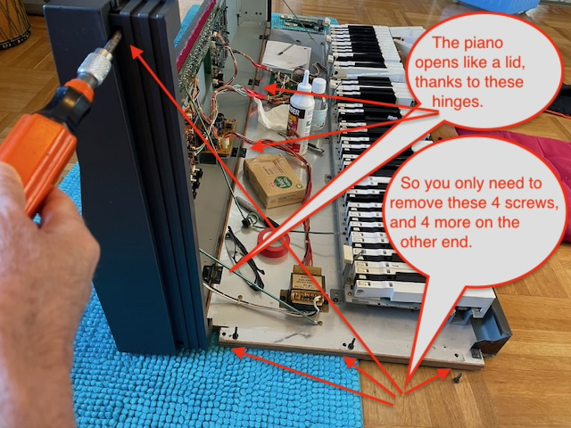

Opening the case of the RD-300s
Before opening the piano, please note:
How do I open the case?
With a Phillips screwdriver, you can remove 8 screws: 6 from the bottom and 2 from the sides near the front.
I cannot guarantee the instructions are identical for this model. I only have the Roland RD-300s. However, the user's manual covers both models, so I assume they are similar.
These instructions and images work for the RD-300s model because that's the model I'm working with.
Unplug the piano from the mains power supply.
Turn the piano upside down. There are 6 screws to remove from the bottom; see the image below.

Turn the piano back to the normal position. Remove the screw on the left side near the front, then the corresponding one on the right side.
Lift gently on the front of the piano.
We welcome contributions from the community. If you have:
Please contribute by:
git checkout -b feature/your-contribution)Return to the main repository page.
Visit the Repository